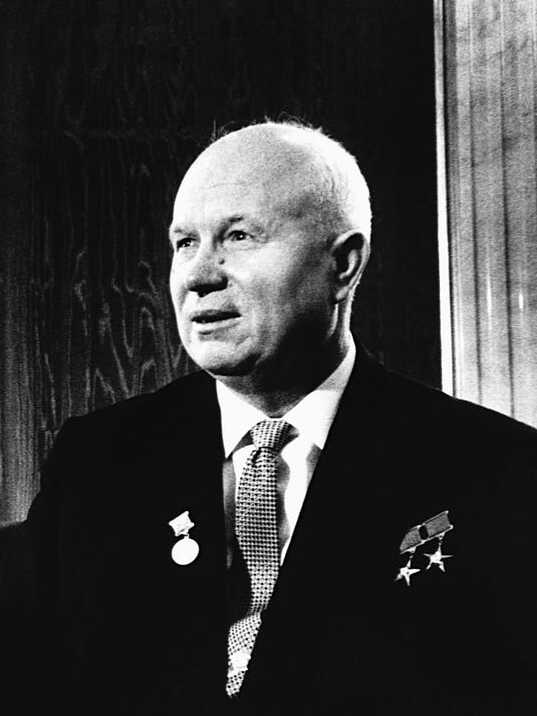
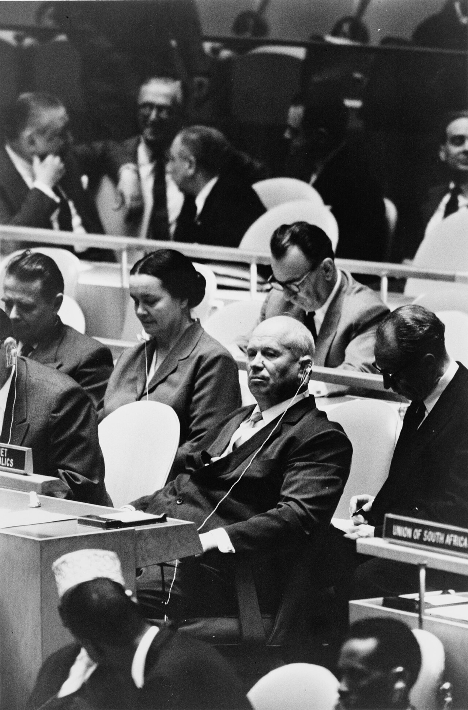
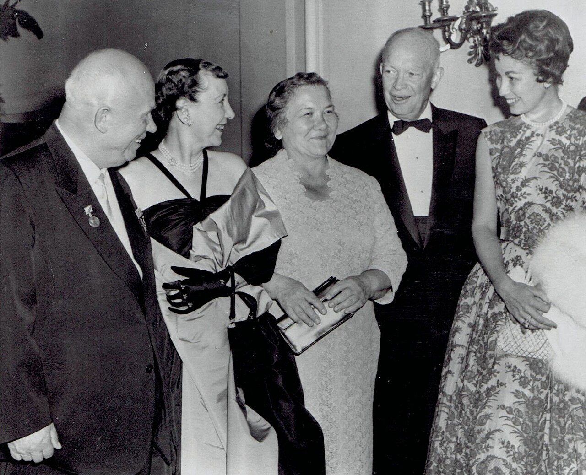

⏱️ 10초 카드 · 스탈린 이후의 소련 (1894~1971)
스탈린 격하평화 공존쿠바 미사일 위기우주 경쟁
여는 질문 — 독재자를 비판한 사람도, 또 다른 억압을 저지를 수 있을까?
이름
한국어니키타 흐루쇼프
원어Никита Хрущёв
실제 발음니키타 흐루쇼프
로마자Nikita Khrushchev
영어권Nikita Khrushchev
왜 이 사람인가
냉전의 소련 쪽 얼굴이에요. 스탈린을 비판해 '해빙'을 열었지만 헝가리를 짓밟은 모순, 쿠바에서 물러선 결단까지 — 냉전이 '단순한 선악 대결'이 아님을 보여 주는 입체적 인물이죠. (냉전 → 쿠바 섹션)
생애
가난한 광부의 아들로 태어나 스탈린 밑에서 출세했어요. 1953년 스탈린이 죽자 권력 다툼 끝에 소련의 최고 지도자가 됐죠. 그는 스탈린과는 다른 길을 가려 했어요.
1956년, 그는 비밀 연설에서 스탈린의 잔혹한 공포정치와 개인숭배를 정면으로 비판했어요(스탈린 격하). 공산권 전체가 흔들릴 만큼 충격적인 일이었죠. 서방과는 '평화 공존'을 내세웠지만, 같은 해 헝가리의 봉기는 탱크로 짓밟았어요.
1957년 스푸트니크로 우주 경쟁을 이끌었고, 1962년엔 쿠바에 미사일을 들였다가 핵전쟁 직전 철수했어요. 이 '도박'과 거듭된 농업 실패로 신뢰를 잃어, 1964년 동료들에게 권력에서 밀려났죠. 스탈린 시대와 달리, 실각한 그는 처형되지 않고 조용히 여생을 보냈어요 — 그것 자체가 그가 바꾼 변화였어요.
자료로 보기 — 유묵·사진



남긴 말
“우리가 당신들을 묻어 버리겠다. (We will bury you.)”
1956년 서방 외교관들 앞에서 한 말. '핵으로 멸망시키겠다'는 협박처럼 잘못 번역돼 공포를 키웠지만, 본뜻은 '너희 자본주의보다 우리 체제가 더 오래 살아남을 것'이라는 의미였어요. · 출처: 1956년 폴란드 대사관 연설 (번역 논쟁 있음)
“스탈린은 '인민의 적'이라는 개념을 만들어, 자신과 다른 모든 이를 제거했습니다.”
1956년 스탈린 격하 비밀 연설의 일부. 전임자의 공포정치를 정면 비판했어요. · 출처: 제20차 당대회 비밀 연설 (1956)
연표
- 1894러시아(현 우크라이나 인근) 광부 집안 출생
- 1953스탈린 사후 권력 장악
- 1956스탈린 격하 비밀 연설 · 헝가리 봉기 진압
- 1962쿠바 미사일 위기 — 철수를 선택
- 1964실각 (처형 없이 은퇴) · 1971 사망
광부의 아들에서 소련의 최고 지도자로
가난한 집안에서 출세해 스탈린의 뒤를 잇고, 세계를 핵전쟁 직전까지 몰았다가 조용히 물러난 길이에요.
고향에서 크렘린까지, 그리고 유엔 무대를 거쳐 다시 크렘린에서 물러나기까지 — 실제 좌표 위에 표시했어요.
빛과 그림자스탈린의 공포정치를 깨고 '해빙'과 평화 공존을 시도한 점은 큰 진전이었어요. 실각자가 죽임당하지 않는 시대를 연 것도 그의 변화죠. 하지만 헝가리 봉기를 무력 진압했고, 쿠바에 미사일을 들인 위험한 도박을 벌였으며, 무리한 농업 정책으로 큰 실패를 남겼어요.
더 깊이 (고등·일반)
스탈린 격하 비밀 연설 (1956)
흐루쇼프는 당 대회에서 스탈린의 대숙청·개인숭배를 폭로했어요. '비밀' 연설이었지만 곧 전 세계로 새어 나갔죠. 이는 공산권에 큰 충격을 줬고, 헝가리·폴란드의 동요로 이어졌어요. 자기 진영의 과거를 스스로 비판한 드문 사건이지만, 동시에 자신도 그 체제의 일원이었다는 한계가 있었죠.
참고: 제20차 소련공산당 대회 비밀 연설 (1956)
헝가리, 1956 — 해빙의 두 얼굴
스탈린을 비판하며 '자유화'를 말하던 바로 그해, 헝가리에서 더 큰 자유를 요구하는 봉기가 일어나자 흐루쇼프는 탱크를 보내 짓밟았어요. 수천 명이 죽었죠. '개혁을 말하되 진영의 이탈은 허락하지 않는다' — 공산권 지도자의 한계를 보여 준 장면이에요.
참고: 1956년 헝가리 혁명과 소련의 진압
물러설 줄 안 지도자 — 그리고 실각
쿠바에서 흐루쇼프는 '지는 것처럼 보이는' 철수를 택해 핵전쟁을 막았어요. 하지만 이 '굴욕'과 농업 실패가 겹쳐 1964년 권력을 잃었죠. 중요한 건, 그가 스탈린 시대와 달리 처형되지 않고 은퇴했다는 점이에요. 그가 연 '해빙'이 자신에게도 적용된 셈이죠.
참고: 흐루쇼프의 실각 (1964)
사람의 그물 — 함께 읽을 인물
이 인물이 나오는 이야기
더 공부하기 — 여기서 출발하세요
📚 책으로
- 흐루쇼프 회고록 / 평전 ↗ · (관련 도서)스탈린 이후 소련을 이해하는 1차·2차 자료.
- 냉전의 역사 ↗ · 존 루이스 개디스냉전 전체 흐름 속 흐루쇼프의 자리를 본다.
📜 1차 사료
- 미 국무부 사료 — 쿠바 미사일 위기 ↗흐루쇼프가 얽힌 냉전 최대 위기의 공식 역사 정리.
🎬 영상으로
- 다큐 — 니키타 흐루쇼프 ↗ · YouTube 검색People Profiles 등 영어 다큐를 찾아보세요.
📍 가 볼 곳
- 모스크바 (크렘린)그가 권력을 쥐고 또 잃은 곳.
- 노보데비치 묘지 (모스크바)그가 묻힌 곳. 흑백이 뒤섞인 묘비가 그의 두 얼굴을 상징해요.